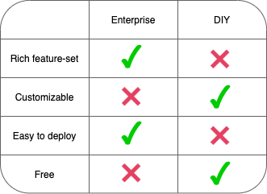

Case Study
1. Introduction
Guardrail is an open-source “traffic replay” tool created to help
reduce incidents in production by using recorded HTTP traffic to
generate regression tests for stateless microservices. The tests run
as out-of-process component tests using traffic replay and service
virtualization.
This case study explains the engineering problem Guardrail
addresses, how it works, and some of the key technical challenges we
encountered while building it. Before we get into those details, we
want to explain the problem that we sought to address.
2. Testing Microservices
To understand Guardrail, let’s first talk about why developers want
to test microservices.
We’ll base our conversation on the following hypothetical scenario.
Aaron, a web developer, is responsible for maintaining an online
store with the following service-oriented architecture.

As you can see, in this architecture, requests from users first hit
an API gateway, which then issues HTTP requests to the “store
service,” which in turn issues its own HTTP requests to the
“shipping service.”
As the maintainer of the app, Aaron decides to make a change to the
implementation of the “store service.” They run their unit tests on
the changes they’ve made to the code, and then they deploy those
changes into the production environment.

However, there is also the possibility that the updated code, once
deployed, introduces unforeseen changes into the microservice as a
whole, and the service starts to mishandle traffic in the production
environment. If the application has low fault tolerance, mishandled
requests could lead to other services failing and the entire system
crashing. According to the 2019 State of DevOps Report (DevOps
Research and Assessment), 15% of deployed changes cause production
incidents that could lead to service impairment or service outage.
Subsequently, they require remediation.

From this scenario, we know that Aaron needs to confirm that the
new version of the microservice
as a whole operates as expected. He needs to verify the
quality of the deployed changes.
2.1 Testing in Production vs. Outside of Production
Now, Aaron needs to decide how to go about that test. There are
broadly two categories for testing microservices: those run in
production, which means the new code is deployed and tested using
real traffic, and those done outside of the production environment,
often using manually scripted traffic. Both types deal with
recreating the environment and data.
2.1.1 Testing in Production
Testing in production aims to surface problems that cannot be
detected in the pre-production environment (Shridharan). It gives
confidence that a problem caught on a smaller scale won’t cause
issues if fully deployed. Of course, this is not the only test that
should be relied on.
Testing in production takes many forms. One of the most common forms
is canary deployment. If Aaron were to release the new version of
the store service using a canary deployment, he would leave the
original version of the “store service” running in production. Then,
he would deploy an instance of the updated “store service” and then
have a load balancer to split traffic meant for the “store service”
between the two versions.
Aaron would then use his production environment’s error-monitoring
tooling to assess the new “store service”’s functionality. If he
doesn’t see a significant increase in errors, he can be reasonably
confident that he can swap out the old version with the new version.
Suppose he does see an increase in errors. In that case, he can
reconfigure the API gateway to stop sending traffic to the “store
service 2.0,” and the application will continue to operate with
minimal interruption.

This approach improves Aaron’s previous course by limiting the
“blast radius” caused by potential problems. Now, if the modified
“store service” mishandles traffic, it will affect a small portion
of production traffic instead of 100% of the traffic, and it will be
easier for Aaron to roll back the changes he made. Google’s “Site
Reliability Engineering" gives an example - “If we instead use
a canary population of 5%, we serve 20% errors for 5% of traffic,
resulting in a 1% overall error rate” (Google, Inc.).
Netflix employees Andy Glover and Katharina Probst share their
experience with this approach: “Whenever you deploy a new version of
your app, there are two things to keep in mind: first, are you
(and/or your colleagues) able to watch the impacts of the deployment
and available to remediate if need be? And second,
should there be a problem with your rollout, are you
limiting the blast radius to the fewest customers possible?” (Glover
and Probst) Though effective, this approach requires careful
planning and tooling. There needs to be an initial investment in
observability to detect problems, and there needs to be strategies
for rapid rollback. Testing in production alone, even with these
valuable tools, is not perfect.
There are cases where mishandled production traffic could have
significant repercussions, even if it’s a tiny portion of overall
traffic. In highly regulated software industries like banking or
medical record applications, a canary deployment mishandling a few
requests could put a company in non-compliance. Or, even in Aaron’s
e-commerce application, a few mishandled requests could result in
the application overcharging some customers, and the business might
not be willing to risk that happening.
Going forward, let’s say this is the case for Aaron, and his
business cannot tolerate the risks involved with relying solely on
testing in production. How can he make sure that the “store service”
will behave as expected once he changes it? He needs to invest more
in pre-production tests.
2.1.2 Testing Outside of Production
To figure out what the pre-production test would look like, let’s
think about what Aaron is trying to do: He wants to replace an old
version of a microservice with a newer version of that same service.
This means that we want to prove that any given request, when issued
to the original version of the microservice or the new version of
the microservice, will result in the same response. If that is the
case, we can say that the recent changes haven’t broken anything.

This is called a regression test. We are not making
changes to the e-commerce application such that the traffic handled
by the “Store Service” changes. We assume that the new, updated
version of the service will receive very similar traffic to the old
version being replaced. Suppose the responses of the service under
test and the deployed version for any given request have the same
HTTP headers and body. In that case, the application should not be
affected by replacing the old version with the new version.
Of course, there are many different ways a microservice can cause
errors in production and many ways to catch those potential failures
using tests (Toby Clemenson). Guardrail is exclusively focused on
catching errors pertaining to the contents of HTTP responses.
Testing outside of production introduces the need for additional
tooling - now that we are outside of production, we have to set up
the testing environment such that it closely mimics production. In
contrast, when testing in production, the service under test lives
in the same environment as its “test data” and service dependencies.
There’s no need to recreate the API requests and data. There’s no
need to replicate the production environment.
2.2 Regression Testing Without Traffic Replay
We have established that a) we need to test the functionality of the
“Store Service 2.0” as a whole, b) we need to run those tests
outside of the production environment, and c) regression tests are a
way to do that.
There are two challenges developers encounter when creating and
running these regression tests:
- Generating requests to issue against the service under test
-
Making downstream services available to the service under test
2.2.1 Generating Requests
One common approach to this challenge is for the developer to
manually script the requests based on their understanding of the
business logic and API. In other words, the developer comes up with
a set of HTTP requests to issue against the service under test and
the response they expect for each request.

They then issue those requests against an instance of the
microservice that they have spun up in a testing environment and
compare the actual responses received from the service under test
with the expected responses.

This approach may be adequate for applications that have simple
APIs. However, the traffic a microservice is handling may be
unpredictable. It is difficult for a developer to manually script
requests that represent traffic the service will need to handle in
production. It's not enough to script a single request, and you
may need to script a sequence of requests to emulate a user's
transaction. The developer needs to anticipate actual usage
patterns. Not only that, he then needs to provide realistic test
data.
On top of that, the tests become stale when the new API rolls out.
Old tests need to be removed, and new ones have to be created.
Manually writing and maintaining those tests is one of the
challenges of regression tests.
2.2.2 Making Downstream Dependencies Available
The second challenge when creating regression tests is making
downstream dependencies available to the service under test.
Recall the architecture of Aaron’s e-commerce application. The
“store service” needs to issue requests to a “shipping service” to
handle the traffic it receives from the API Gateway. In this case,
the “shipping service” is a “downstream dependency” of the “store
service.”
Downstream dependencies can be internal to an application, as is the
case in Aaron’s e-commerce store, or they can be external to the
application.
The approach to this challenge depends on whether the downstream
dependency is internal to the application or hosted by a third
party. If the downstream dependency is internal to the application,
as is the case with Aaron’s e-commerce application, then it can be
spun up in the same environment as the service under test.

This solution may work with a few simple downstream dependencies.
If, for instance, they are easily contained in a docker container,
it won’t take too much effort to spin up those dependencies in the
testing environment.
However, it’s not practical for architectures with multiple, complex
dependencies.
In terms of complexity, a dependency could be a SaaS application,
which can’t always be run in a container for testing.
In terms of the number of dependencies, spinning up many
microservices in the same testing environment makes that environment
brittle. Many factors can cause problems, and it could be the
integration settings, replication of configuration, or other things.
“If your test needs to deploy a large number of services, there’s a
good chance that one of them will fail to deploy, making tests
unreliable.” (Richardson Section 10.3).
The other concern with spinning up many dependency services is that
it requires teams to coordinate. One of the main advantages of
having a distributed architecture is allowing teams to advance
independently, but requiring them to correspond to run tests reduces
each team’s independence.
If the dependency is external to the application’s architecture,
meaning a third party operates it, Aaron cannot spin it up locally.
Instead, he can interact with the third-party dependency from his
test environment. This only works if the third-party offers a
testing API, is not rate-limited, or the effects will be
inconsequential (for example, won’t charge anyone or send real
emails).

The other challenge of testing with a third-party dependency is
determinism. This solution will not work if the responses change
over time. For example, suppose the dependency service during the
test returns the current exchange rate of USD to euros. In that
case, the data used by the service under tests will change every
time the developer runs a suite of tests, making it impossible to
predict what the expected response should be for that suite of
tests.
Altogether, the challenges in testing a microservice before
releasing it to production are complex for these reasons: How does a
developer know what requests to issue against it? And how do they
create an isolated testing environment without having to spin up
multiple, complicated services? Traffic replay is a
testing pattern intended to solve this problem.
2.3 Regression Testing with Traffic Replay
Let’s revisit the same two challenges addressed previously and how
traffic replay can be used to make microservice testing more
manageable and more robust.
2.3.1 Generating Requests using Traffic Replay
“Traffic replay” uses recorded production traffic as the set of both
requests and expected responses. They are requests to issue against
the service under test and the expected response for each of those
requests. That is, Aaron adds instrumentation to the production
environment...
...which creates a record of two things: 1) all of the requests sent
to the “store service" during a specific time and 2) the
"store service"’s corresponding responses for each of
those requests.
The recorded requests from production are issued to
the service under test in the testing environment.
The responses are then compared with recorded responses from
production.

Using traffic replay, the developer does not have to predict what
production traffic looks like and how exactly the service under test
should respond to that traffic. This makes traffic replay a good fit
for creating regression tests when production traffic is complex and
unpredictable.
2.3.2 Making Downstream Dependencies Available using Service
Virtualization
“Service virtualization” also makes use of recorded production
traffic, except this time it is traffic “downstream” of the
microservice to be updated. That is, it records all outgoing
requests from the “store service” in production and the
corresponding responses from downstream dependencies.
That data is then used to “virtualize” each dependency.
Virtualization means that a process is started in the testing
environment for each downstream dependency. When that process
receives an HTTP request, it searches the recorded downstream
production traffic for an identical request that happened in
production. When it finds that request, it issues the corresponding
response that the “store service” received in production.
Instead of spinning up an entire set of microservices in a testing
environment, which can be a long, complicated process, the developer
spins up a single process for each downstream dependency. This
avoids the potential integration settings and configuration problems
associated with spinning up many services in a testing environment.
Virtualizing dependencies is a good fit for testing microservices
that have many downstream dependencies which cannot be all spun up
in the same environment:
-
It makes it possible to run tests on microservices with
third-party dependencies. The responses for a given request will
be the same each time the test is run.
-
There’s no need to rely on that third-party’s rate limit or
availability.
-
It makes the tests repeatable. The data for each test will be the
same each time the test is run.
3. Why We Built Guardrail
Developers wanting to use traffic replay in their microservice
testing strategy can either purchase an enterprise product or build
their own solution using a collection of open-source tools.
Currently, one of the leading enterprise options is Speedscale.
Speedscale combines upstream and downstream traffic replay in a
single solution and provides additional features such as load
testing and chaos engineering.
If a company didn’t want to pay for a full-featured solution like
Speedscale, they could create one themselves using a combination of
already existing open-source tools. GoReplay or StormForge’s “VHS”
can be used to replay upstream traffic, and WireMock, Mountebank, or
Nock can be used to virtualize services.
While many open-source tools are well built and well supported,
fully isolating a microservice with basic traffic replay
functionality requires coordinating multiple such tools so that they
perform cohesively across multiple environments;
this is not a trivial task. For example, upstream
and downstream traffic recording must be started and stopped
simultaneously for traffic replay and service virtualization to work
in tandem. In addition, current open-source traffic replay tools do
not compare recorded responses with test responses, meaning
developers would need yet another tool to “diff” the two responses
to detect deviations.

If a small team maintains an application, they may not need the
advanced features of an enterprise traffic replay tool, and they may
not have the time to develop their own. This is the use case for
Guardrail. It is not as feature-rich as an enterprise product like
Speedscale, but it is easier to deploy than the DIY options, making
it a good fit for small teams to validate the production readiness
of the newly upgraded services.

4. What is Guardrail
Guardrail is an open-source tool that generates regression tests for
microservices using recorded production traffic. It combines traffic
replay and service virtualization to test a microservice in
isolation.
There are three core functionalities to Guardrail:
-
Record traffic in the production environment

- Replay traffic in the testing environment

-
Report the results from the testing environment


5. Using Guardrail
Let’s walk through a typical workflow for a developer using
Guardrail.
5.1 Record
The first step is to record traffic upstream and downstream of the
microservice in production that we are working on changing.
5.1.1 Verify Application Meets Requirements
There are a few requirements an architecture must meet before
Guardrail can be deployed.
First, network traffic between microservices must be unencrypted.
This scenario typically will involve a firewall and a gateway that
separates the private and the public internet. Nginx as an API
gateway with TrueCrypt is a basic example of this scenario. It is
possible to use Guardrail with encrypted traffic, but the developer
must add their own TLS termination proxy.
Secondly, the application must use the “correlation ID” pattern to
trace requests (Microsoft and contributors). A “correlation ID” is a
unique HTTP header value attached to a request when it passes into
an application’s private network.
Thirdly, the use case is limited to non-persisted stateless services
that are purely for data transformation.
Finally, it must match the architecture's communication pattern
and protocol. Guardrail can work with architectures with
(synchronous) HTTP communication patterns using a combination of
REST and JSON. It doesn't work with asynchronous communication
patterns that use HTTP Polling or message queues.
5.1.2 Installation in a Production Environment
Install GoReplay,
Mountebank, and
Guardrail
on the production machine of the microservice you will eventually be
changing.
5.1.3 Change URLs of Downstream Dependencies
Traffic between the microservice and its downstream dependencies is
recorded using a proxy, so the URLs the microservice uses to address
those dependencies must be changed to the URLs of the proxies.

The developer changes the URLs by declaring a list of downstream
dependencies and then running the commandguardrail init.
5.1.4 Start Recording
The developer then uses the guardrail record command.

From that point on, GoReplay is recording upstream traffic and
Mountebank is recording downstream traffic. Traffic is recorded to
the production host’s file system.

5.1.5 Stop Recording
The developer can then stop upstream and downstream traffic
recording by quitting Guardrail (^C). Finally, the URLs addressing
the downstream recording proxies should be reverted to the URLs that
point directly towards the downstream dependencies.
5.2 Replay
5.2.1 Setup the Testing Environment
The developer then downloads GoReplay, Mountebank, and Guardrail to
whatever machine they will run their tests on. We will assume that
the machine is the developer’s local machine.
They then spin up the updated microservice (in Aaron’s case, “store
service 2.0”) on that machine. The microservice should be configured
using the same URLs used by the microservice in production during
recording. If it is configured with addresses of the actual
dependencies, the service under test will issue requests to the real
production dependencies..
5.2.2 Data Transfer
Next, the developer manually transfers the files of recorded traffic
from the production host to the host of the machine running the
testing environment.
5.2.3 Replay Traffic
The developer then runs the guardrail replay command in
the testing host. This starts up the Mountebank virtualized services
using the data collected from production and then replays the
upstream requests against the service under test using GoReplay. It
also starts up a component of Guardrail called the “Reporting
Service,” which becomes relevant in the next section.

The same traffic recording can be replayed multiple times, allowing
developers to iterate on the service under test without having to
re-record traffic.
5.3 Report Results
3.1 Calculate and View Results
In addition to storing traffic data in a database, the Reporting
Service calculates the results of a replay session and serves the
results to the Guardrail user interface. Results are a comparison of
the actual and expected HTTP response status, headers, and JSON
body.
Once a replay session finishes, the developer can access the user
interface from a web browser of the machine running the test
environment. Requests that had different responses from what was
recorded in production are listed, along with the expected and
actual responses.

6. Design Decisions
There are many ways to build a tool like Guardrail. Here are some of
the “forks in the road” we encountered when building Guardrail and
the reasoning behind the directions we chose.
6.1 Inserting Upstream Recording Instrumentation
One of the first significant design decisions we encountered was
which tool to use for recording traffic. There are two leading
approaches to recording traffic of a single microservice in the
production environment: proxy and packet capture (PCAP).
6.1.1 HTTP Proxy
The aptly named proxy approach requires starting an
application-level proxy server to sit in front of your microservice.
The proxy server handles recording incoming and outgoing traffic
that passes through it. All incoming traffic must be directed to the
proxy server instead of your microservice. Building it is relatively
simple, although redirecting traffic may not be.
With this approach, consumers of the “store service” must connect to
the proxy instead. A server listens on a specific port, and the
combination of that binding port and the host IP makes the server
addressable in the network. A proxy will have a new address, and
clients must connect to it temporarily.
If there is only one upstream client, that might be ok. But we
don't know how many client services connect to a microservice.
One could potentially address this complication with DNS. Changing
DNS records can redirect traffic, and a local DNS resolver can
divert traffic to a different host. It won't point to the same
host with a different port, though it can still work.
However, managing DNS records is problematic without integrating
them into an orchestration system or leaving it up to the user to
manage. Without it, there are very few assumptions we can make about
the underlying infrastructure.
Let’s consider the other approach.
6.1.2 UNIX PCAP
Alternatively, packet capture doesn't require any additional
infrastructure or redirection of traffic. You run a packet capture
process on your production server, and it watches a specific network
interface and records traffic from incoming connections.
Unlike application proxies, packet capture does not have direct
access to HTTP messages. IP packets are duplicated on the host's
network interface. But, IP is a lower-level protocol, so an extra
step has to bring the IP payload to the application layer. This step
assembles the packet payloads to get the TCP segments and then
eventually to HTTP messages.
There are open-source tools that take advantage of packet capture
and bring the IP payload to the application layer - GoReplay being
one of them. GoReplay has the added advantage over other PCAP tools
because it can replay recorded traffic.
Because application proxies are more disruptive, we decided to go
with a packet capture approach with GoReplay.
6.2 Inserting Downstream Recording Instrumentation
There are different considerations when it comes to deciding how to
record requests between the microservice in production and its
downstream dependency services. We have to use a proxy because we
can't use packet capture.
Packet capture is no longer an option for recording downstream
dependencies because it works only on a specified port. It's
suitable for published server ports that are static but not good for
HTTP clients. As an HTTP client, a random non-standard ephemeral
port is used to establish a connection, and this is why we have to
rely on a proxy to record downstream traffic.
Without packet capture, using proxies to record traffic becomes the
most promising approach, which begs the question: how do we direct
traffic away from the dependency to the proxy?
One of these three will need to be changed:
- The HTTP client library
- The local DNS records of the dependencies
- The configuration of the dependency URLs
Changing the library used to issue HTTP requests would require code
modification for the microservice. The open-source tool, Nock, can
be used to accomplish this in microservices written in JavaScript,
and VCR can be used in microservices written in Ruby. The main
tradeoff of this approach is that we'd be restricted to testing
microservices written in languages that those tools can support, and
we would require additional changes to their code. We would rather
use a solution that occurs out-of-process.
We considered redirecting traffic through DNS, but this needs to be
managed externally, which may be unwieldy. Redirecting traffic this
way will require changing the DNS record for a downstream dependency
to point to a different IP. Each recording proxy for a virtual
dependency may have to be hosted on different IPs because DNS can
only redirect to a different IP but not redirect to a different
port.
In addition, the process of modifying DNS records differs greatly
according to how an application is deployed. Some applications
deployed on AWS are able to interact with their DNS using Route 55,
some using Kubernetes can interact with a cluster’s DNS using
CoreDNS, while some do not have an easy way to modify DNS records at
all. We opted for a solution that is not limited to a particular
deployment strategy.
Changes to the configuration file are easier to manage compared to
the first two methods. Unlike the HTTP library, this will only be a
configuration change and not a code change. But of course, there is
an added user step and we need to assume the convention of
extracting URLs for downstream dependencies into configuration files
(Wiggins).
To use Guardrail then, the user will have to change the service
configuration manually for the recording duration. Changing the URL
in the configuration redirects traffic, and reverting the changes
redirects traffic back.

6.3 Coordinating Upstream and Downstream Recording
Being able to record upstream and downstream traffic is not enough
to create meaningful tests. The data collection procedure needs
coordination. Specifically, the downstream recording must start
before upstream is started and upstream recording must stop before
downstream is stopped. Otherwise, the virtualized dependencies will
be issued requests that they don’t have the data to respond to and
the tests will fail.
Our solution takes advantage of the fact that GoReplay and
Mountebank both run on the same host as the microservice in
production. Because GoReplay and Mountebank run on the same host, we
are able to orchestrate their behavior by creating scripts executed
using the host’s CLI. This saves the developer from having to know
how to coordinate upstream and downstream recording and replay,
simplifying the process to one “record” command in production and
one “replay” command in testing.
6.3 Correlating Upstream Traffic with Downstream Traffic
Virtualized services do not know how to disambiguate between
multiple requests with the same signature.
When replaying traffic against the service under test, one expects
some responses to be different from the responses recorded in
production. Guardrail is built to catch those differences. However,
we found that some responses occurring during replay contained data
that pertained to the wrong request.
Expected test results

Actual test results

This traffic mismatch only occurs with identical requests that
happened concurrently in production. If the recorded requests in
production have different paths and are spaced out over time, there
is no traffic mismatch.
This error is a result of how Mountebank works when replaying
traffic. When Mountebank is in “replay” mode, it pattern-matches an
incoming request to a stub. The matching stub then generates an HTTP
response from a list of one or more recorded responses.
If there is more than one recorded response for a given request,
Mountebank, on each subsequent matching request, will iterate
through its list of recorded responses, starting over once it
reaches the end. If a dependency in production responds to requests
in the order it receives those requests, then Mountebank will
respond to every request correctly in “replay.”However, dependencies
are not guaranteed to respond to requests in the order that they
receive them.

This is a problem when Mountebank relies on the order the responses
occurred in production when deciding how to respond to multiple
identical requests. To prevent this, we need a way to tie together
related upstream and downstream traffic so that Guardrail recognizes
them as a single thread.
Our solution was to require applications using Guardrail to use
correlation IDs in their back-end traffic. An “X-Correlation-ID”
HTTP header is a unique request identifier for every incoming user
request. Devices on the request path add this header as early as
possible, and they pass them along the entire request/response
cycle, both upstream and downstream. API gateways or web servers
such as NGINX and Apache support this feature, though the naming
varies slightly.
When recorded traffic has a correlation ID pattern, there no longer
is such a thing as “identical requests.” Each request issued to a
dependency has exactly one associated response, so there is no
possibility for out-of-order production traffic to lead to
mismatched traffic in testing.

6.4 Collecting Data in One Place
There are three critical pieces of information when it comes to
testing microservices using production traffic:
- The recorded user request from the production environment
-
The recorded response to the user from the production environment
-
The replayed response from staging (what our service under test
responds with when we replay the recorded user request).

For Guardrail’s use case, none of this data is very useful in
isolation. We need all three of these pieces combined into a single
unit that we can evaluate. We refer to this three-part unit as a
“triplet.”
Conveniently, GoReplay outputs a file containing this information
after replaying recorded traffic. However, it does not group the
information into meaningful triplets. Production requests,
production responses, and replayed responses are all mixed together
in the file.
If we were to use that file, we would need to read each GoReplay
traffic file into memory, parse the data, and group the entries into
triplets using their correlation ID.

The alternative was to use GoReplay’s middleware to process
components as they arrive and forward them to Guardrail’s reporting
service, where they’re assembled into triplets and compared to
generate a final report with test results.
Comparing these two options, processing components using middleware
is computationally less intensive than parsing files and matching
components based on correlation ID.
7. Future Work
We designed Guardrail to solve the current use case we envisioned.
However, we did notice some areas we can improve on for future
iterations.
7.1 Encryption
Encryption was not the core problem on the initial implementation,
but it's among the more critical parts to address. The industry
broadly recognizes that encryption of user data should happen by
default.
We want to add a solution to transfer data across environments
securely, encrypt it at rest, and provide access control for
developers and operators.
7.2 Diffing Outbound Requests
Currently, the regression simulations are only on the API consumer
side. We want to add the ability to show unexpected downstream
requests associated with an upstream request.
7.3 Toggle Simulating Response Times
We would like to add the ability to toggle the ability to simulate
the downstream response times.
There are tradeoffs between test execution time and seeing the
response time comparison of test and record traffic. If you emulate
response time, the test will run longer, but you can't see the
comparison and vice versa.
7.4 Filtering Requests
Another thing we can easily add is the ability to filter requests.
Guardrail is aimed only at non-persisted microservices, but
potentially, this filter could allow testing on a particular
database snapshot. Using Guardrail in microservices with databases
needs further investigation.
7.5 Comparison Middleware
Guardrail checks the payload's deeply nested body by comparing
attributes in the JSON payload. This comparison may not fit all use
cases.
If the payload returned by the service under test includes a
timestamp, there would be a different result. The test case would
fail even though the body produced is correct except for the
timestamp having another value.
There's no way of knowing in advance if and where the timestamp
would be included. If we do, we can skip it from the comparison.
There's no universal format for timestamps that we can filter
out.
Future work may consider using the Levenstein distance algorithm to
compare how close the two responses are from each other (Cuelogic).
Alternatively, we could give the testers the ability to define which
response is considered a fail or a pass through an optional
middleware.
8. Conclusion
Guardrail is a tool designed to test stateless non-persisted
microservices limited to data transformation tasks using synchronous
HTTP communication. With that use case, we can test using only
traffic replay and service virtualization.
We identified the main challenges of testing a microservice, and
they center around creating test data and recreating the
environment. Creating test data needs a good understanding of the
API, and those tests need to be separately maintained. Furthermore,
the environment needs to be emulated with service virtualization.
We believe we've built Guardrail into an open-source tool that
is well-positioned to deliver significant testing value to
engineering teams in charge of budding microservices. The core value
provided by Guardrail is that it abstracts and automates much of the
complexity and tedium involved with implementing and maintaining
good, accurate regression tests for microservices. We hope that
Guardrail can help you prevent your deployed changes from being in
the 15% that cause a production incident.
9. Bibliography
-
Cuelogic. “The Levenshtein Algorithm.”
https://www.cuelogic.com/blog, 2017,
https://www.cuelogic.com/blog/the-levenshtein-algorithm. Accessed 14 September 2021.
-
DevOps Research and Assessment. “2019 State of DevOps Report.”
https://www.devops-research.com/research.html#reports, 2019,
https://services.google.com/fh/files/misc/state-of-devops-2019.pdf. Accessed 14 September 2021.
-
Glover, Andy, and Katharina Probst. “Tips for High
Availability.”
https://netflixtechblog.medium.com/, 2018,
https://netflixtechblog.medium.com/tips-for-high-availability-be0472f2599c. Accessed 14 September 2021.
-
Google, Inc. “Site Reliability Engineering.”
https://sre.google/books/, O’Reilly, 2018,
https://sre.google/workbook/canarying-releases/. Accessed 14 September 2021.
-
Microsoft and contributors. “CSE Code-With Engineering
Playbook.”
https://microsoft.github.io/code-with-engineering-playbook/,
https://microsoft.github.io/code-with-engineering-playbook/observability/correlation-id/. Accessed 14 September 2021.
-
Toby Clemenson. “Testing Strategies in a Microservice
Architecture.”
https://martinfowler.com/microservices/, 2014,
https://martinfowler.com/articles/microservice-testing/. Accessed 14 September 2021.
-
Richardson, Chris. Microservices Patterns. Manning
Publications, 2019.
-
Sridharan, Cindy. “Testing in Production: the hard parts.”
https://copyconstruct.medium.com/, 2019,
https://copyconstruct.medium.com/testing-in-production-the-hard-parts-3f06cefaf592. Accessed 14 September 2021.
-
Wiggins, Adam. “The Twelve-Factor App.”
https://12factor.net/,
https://12factor.net/config. Accessed 14 September 2021.